Stock — Bodega
Lo que hay físicamente en bodega hoy, según inventario — disponible para vender/armar de inmediato. Toca el nombre para ver la ficha si el producto ya está en el catálogo.
| Producto | SKU | Cantidad | Nota | |
|---|---|---|---|---|
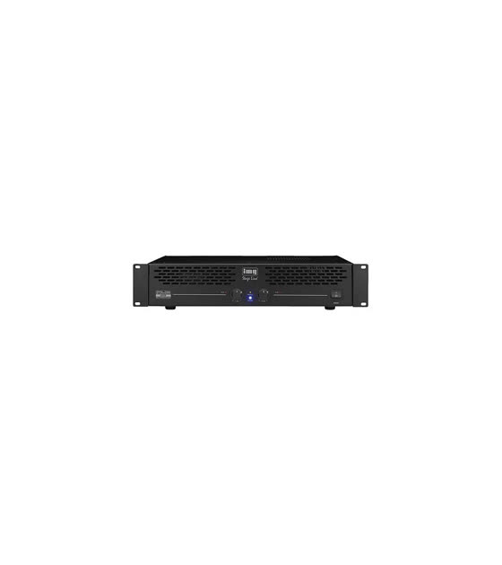 |
Amplificador vibroacústico adicional | BJ-EMAVIBX | 1 | |
Sin foto |
Balancín 120x30x60 | BJ-EV073B | 1 | |
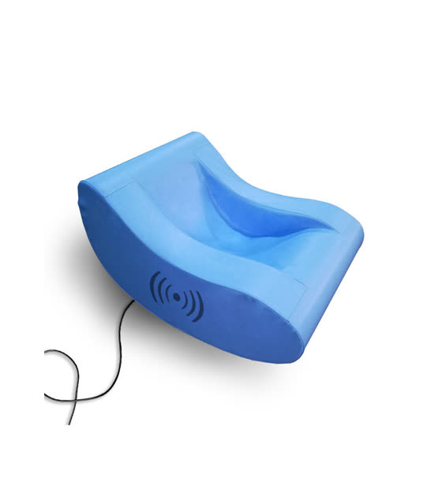 |
Balancín vibroacústico | BJ-EMBT-V | 1 | |
Sin foto |
Base cuadrada para rincón Luminea | MP-LEMBCTF | 1 | |
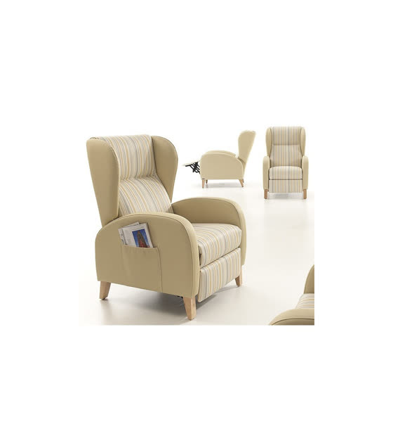 |
Butaca relax vibroacústica | BJ-BUTV | 1 | |
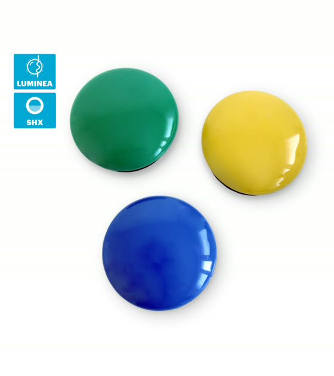 |
Button 1 | BJ-LCTRL1 | 3 | |
Sin foto |
Columpio Plataforma de Balanceo Advantage | BJ-EV120040 | 2 | |
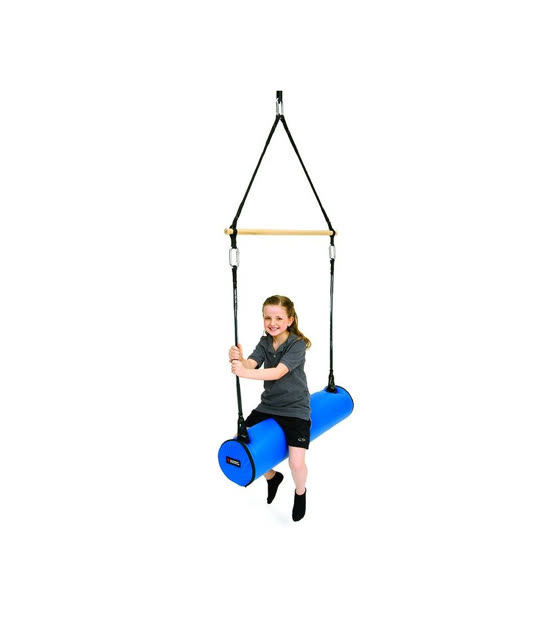 |
Columpio Rulo 2 en 1 | BJ-EV120050 | 1 | |
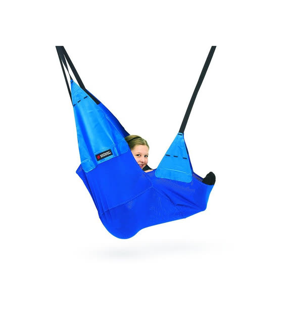 |
Columpio Saco Cocoon | BJ-EV0132 | 1 | |
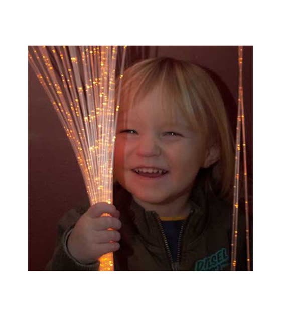 |
Cortina Luminea | BJ-LCFIB | 2 | |
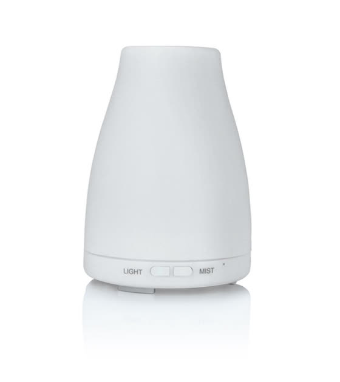 |
Difusor de aromaterapia | BJ-EDA | 1 | |
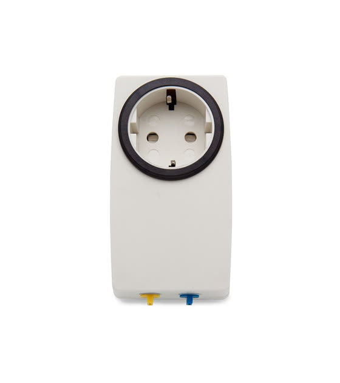 |
Enabler Socket + | BJ-234 | 12 | |
Sin foto |
Estante para pompas SHX | MP-EX46-2 | 1 | |
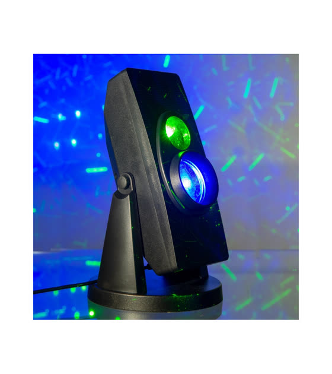 |
Estrellas SHX | BJ-EX47 | 3 | |
Sin foto |
Fibra óptica Luminea 3 mt | BJ-LFIB3 | 1 | |
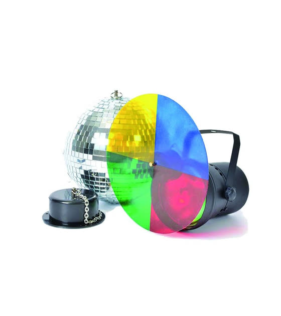 |
Kit de bola de espejo | BJ-EKBE300 | 1 | |
| Kit de iniciación de aromaterapia | BJ-EKIA | 2 | ||
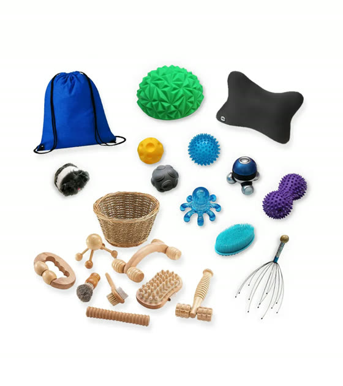 |
Kit de masaje | BJ-KMAS | 1 | |
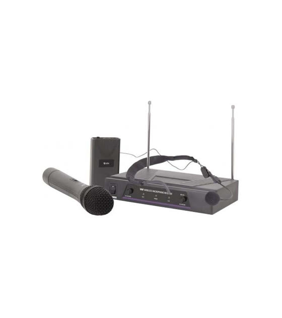 |
Kit Voz SHX | BJ-EXKV | 1 | |
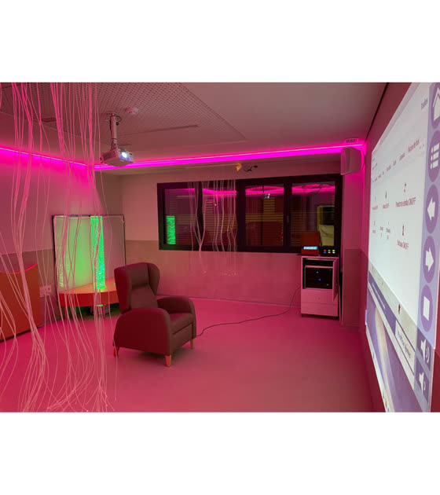 |
Línea LED 5mts con perfil de instalación | BJ-LLL | 2 | |
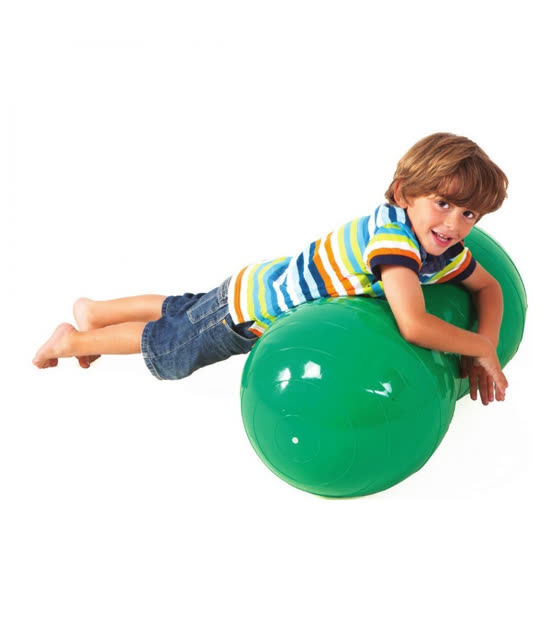 |
Maní terapéutico | BJ-43700100 | 1 | |
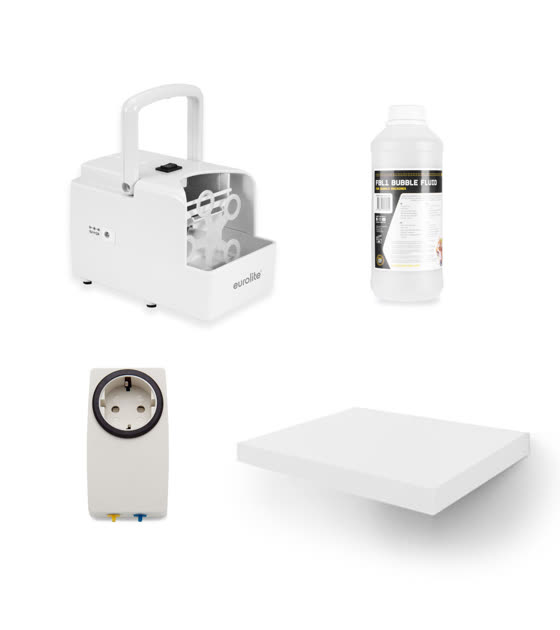 |
Máquina de burbujas | MP-EX46-1 | 1 | |
 |
Pelota terapéutica 45 cm diámetro | BJ-51090000 | 1 | |
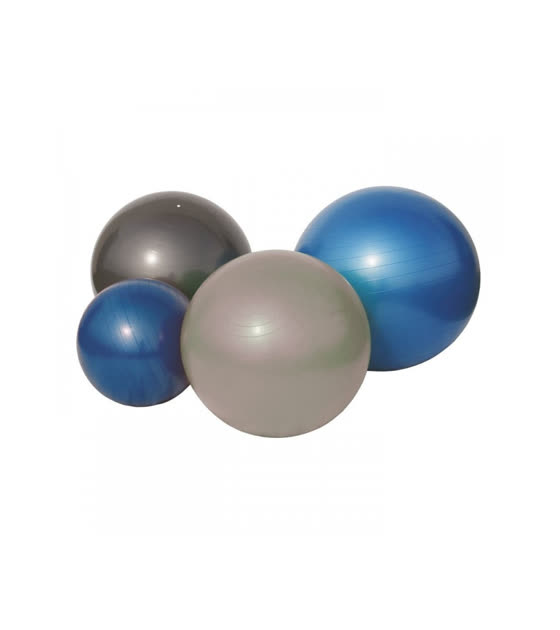 |
Pelota terapéutica 55 cm diámetro | BJ-51091000 | 1 | |
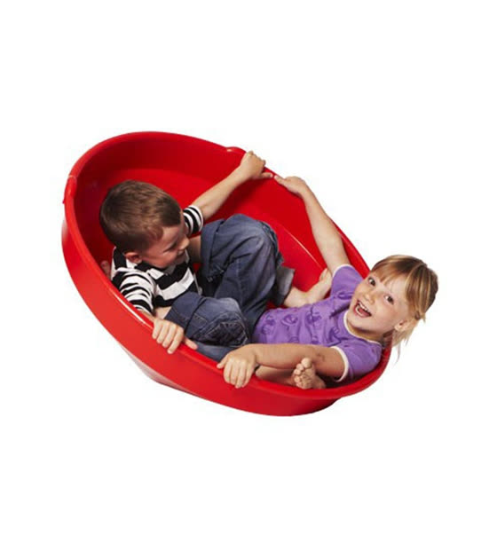 |
Peonza Gigante | BJ-EVPG | 1 | |
 |
Piscina de pelota Luminea | BJ-LPIS | 1 | |
Sin foto |
Preamplificador con filtro | BJ-EMAVIB-1 | 1 | |
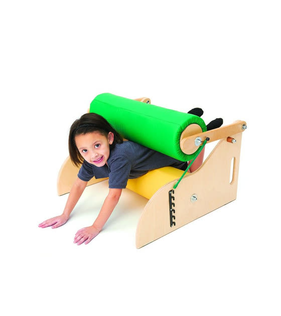 |
Rodillo de presión | BJ-EV150030 | 1 | Dañado, por reparar. SÍ es Qinera (precio_eur catálogo: €771) — falta confirmar precio de venta CLP. |
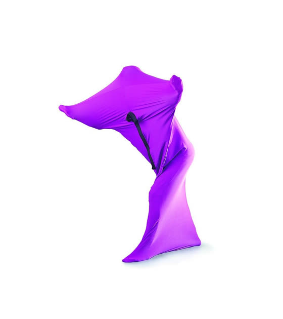 |
Saco de danza M | BJ-EV2208 | 2 | |
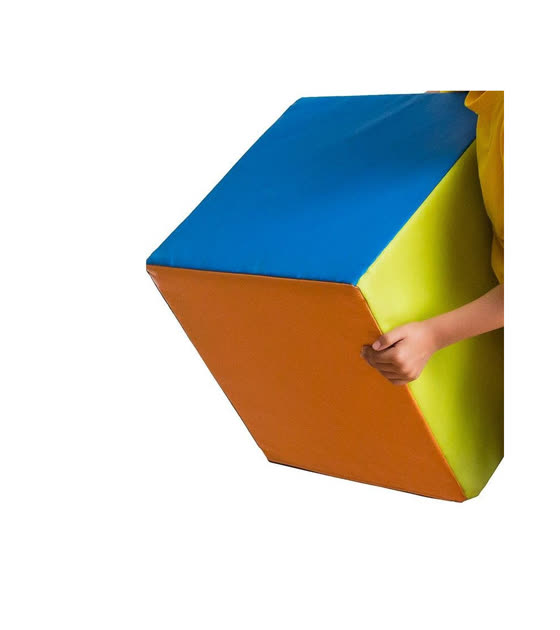 |
Sensory Cube grande | BJ-EMSC | 1 | |
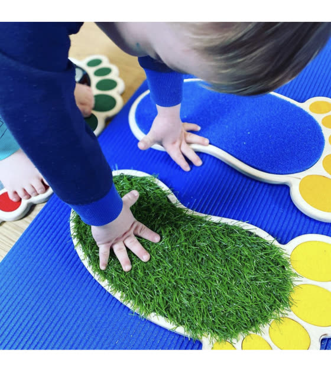 |
Sensory Feet 1.1 | BJ-SF11 | 1 | |
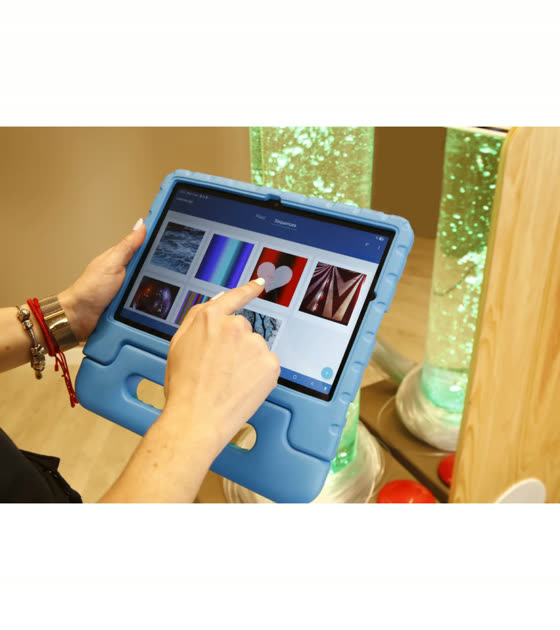 |
Sensory Go SHX | BJ-SGSX | 1 | |
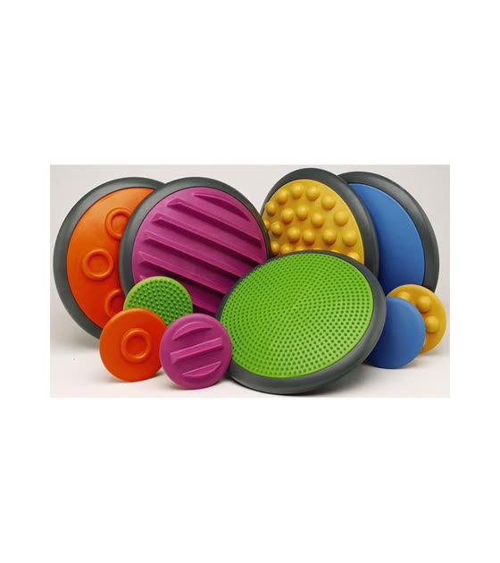 |
Set de disco táctiles | BJ-E16807 | 1 | |
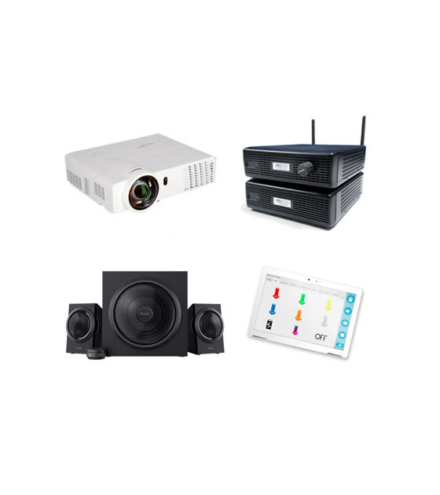 |
SHX Compact | BJ-EX04 | 1 | |
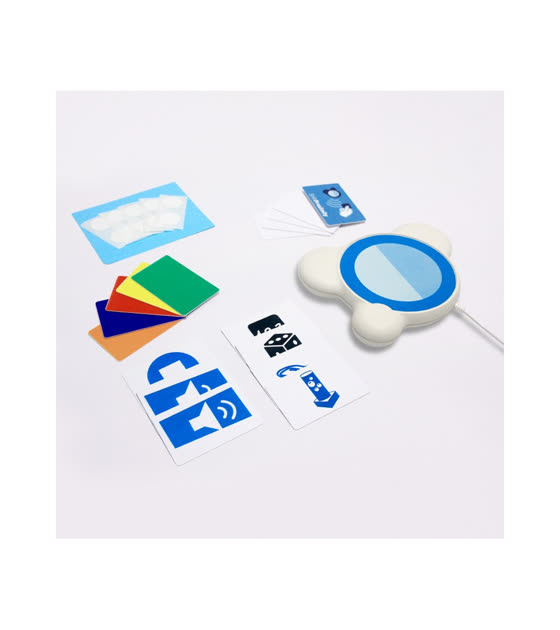 |
SHX Proximity | BJ-EXPRX | 1 |
Stock — Contenedor (en camino)
Lo que viene en el contenedor OC 028/2026 (llega ~11-ago-2026), según la factura — total de esa OC: €97.133,20 neto. Todavía NO disponible para vender hoy.
| Producto | SKU | Cantidad | Valor unit. (EUR) | Total (EUR) | Nota | |
|---|---|---|---|---|---|---|
Sin foto |
24 tarjetas y 24 pegatinas adicionales Proximity | BJ-EXPRX24 | 3 | €58,4 | €175,2 | |
| Amplificador vibroacústico adicional | BJ-EMAVIBX | 6 | €315,2 | €1.891,2 | ||
Sin foto |
Armario para SHX Compact/ kit vibro bluetooth | BJ-EX4-C | 6 | €83,2 | €499,2 | |
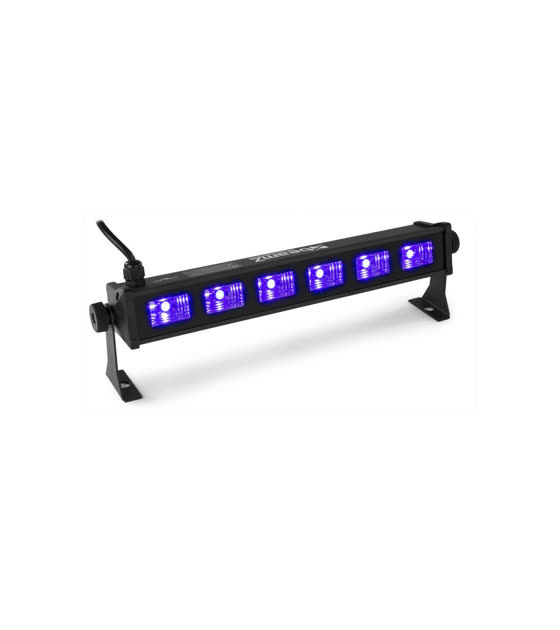 |
Barra LED UV SHX | BJ-EIBLUVX | 1 | €184,8 | €184,8 | |
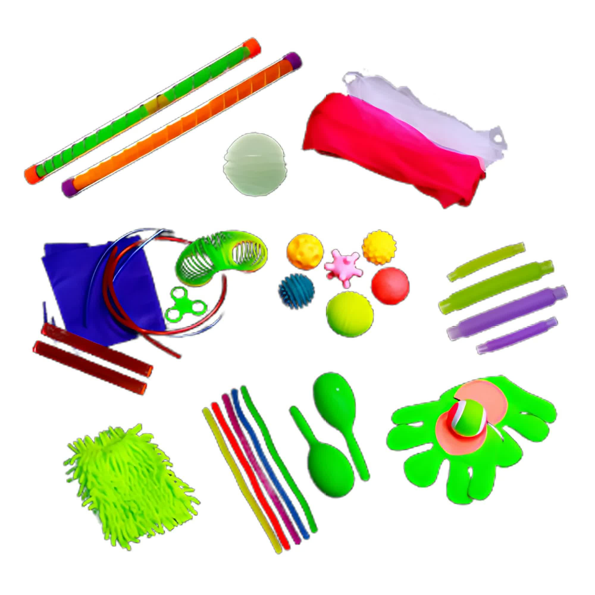 |
Bolsa material Ultravioleta | BJ-KUV | 5 | €126,4 | €632 | |
| Butaca relax vibroacústica | BJ-BUTV | 3 | €840 | €2.520 | ||
| Button 1 | BJ-LCTRL1 | 2 | €124,8 | €249,6 | ||
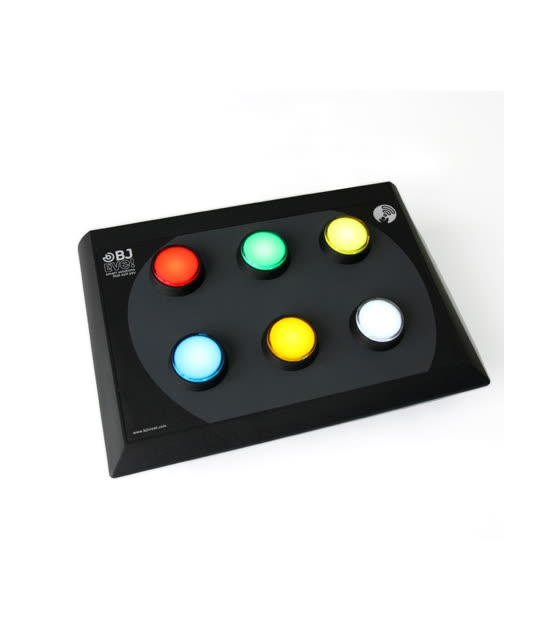 |
Button 6 | BJ-LCTRL | 7 | €289,6 | €2.027,2 | |
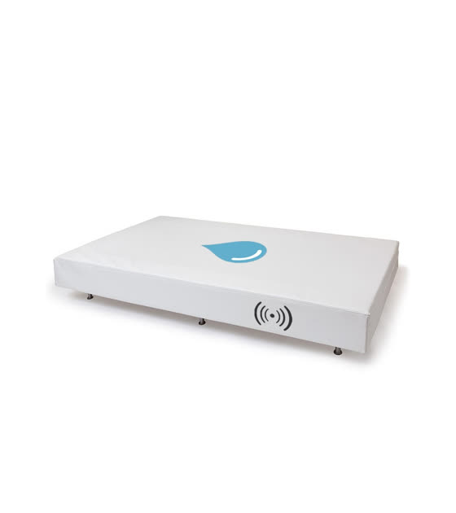 |
Cama de agua vibroacústica | BJ-EMCA-V | 1 | €1.745,6 | €1.745,6 | |
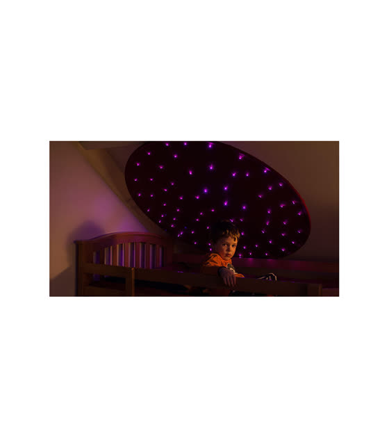 |
Cielo Luminea circular | BJ-LCCFIB | 1 | €680 | €680 | |
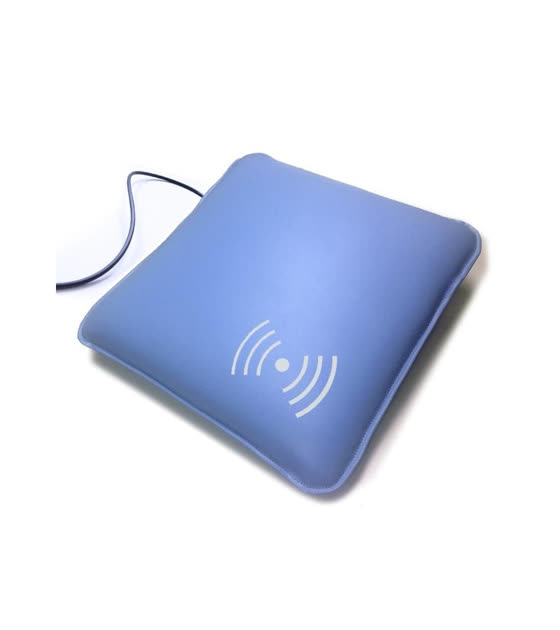 |
Cojín vibroacústico | BJ-EMCV | 5 | €244 | €1.220 | |
| Difusor de aromaterapia | BJ-EDA | 2 | €52,8 | €105,6 | ||
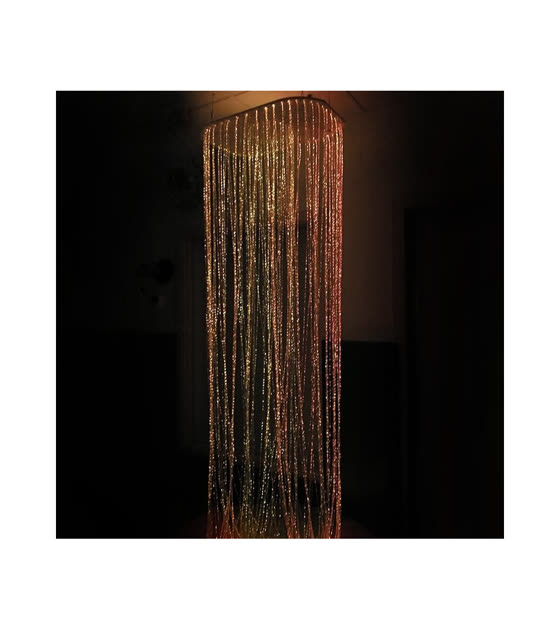 |
Ducha Luminea | BJ-LDFIB | 2 | €1.045,6 | €2.091,2 | |
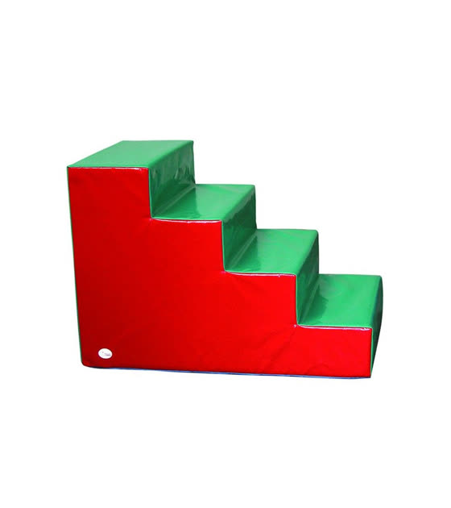 |
escalera grande | BJ-EPS061-C | 1 | €206 | €206 | Producto nuevo, no está en el catálogo — revisar con proveedor |
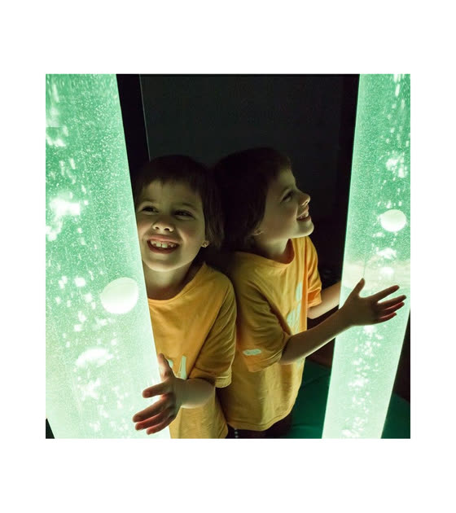 |
Espejo grande curvo | BJ-EEGC | 2 | €248 | €496 | |
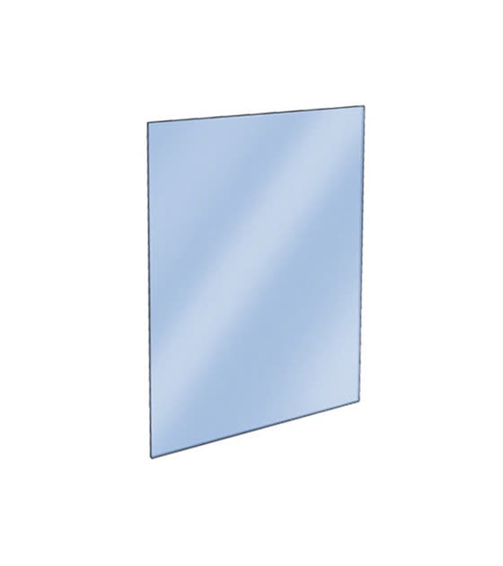 |
Espejo grande recto | BJ-EEGR | 13 | €218,4 | €2.839,2 | |
| Estrellas SHX | BJ-EX47 | 4 | €236 | €944 | ||
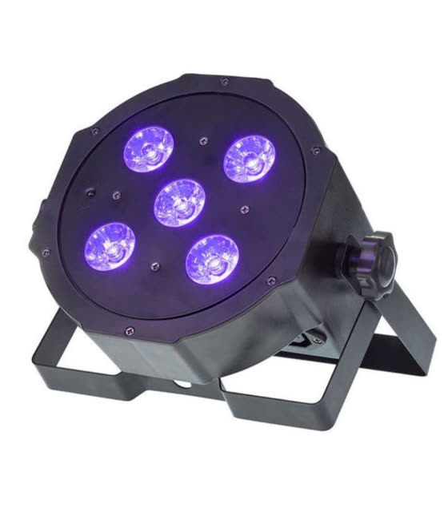 |
Foco de luz UV LED | BJ-EIFUVL | 4 | €63,2 | €252,8 | |
| Kit de iniciación de aromaterapia | BJ-EKIA | 5 | €44 | €220 | ||
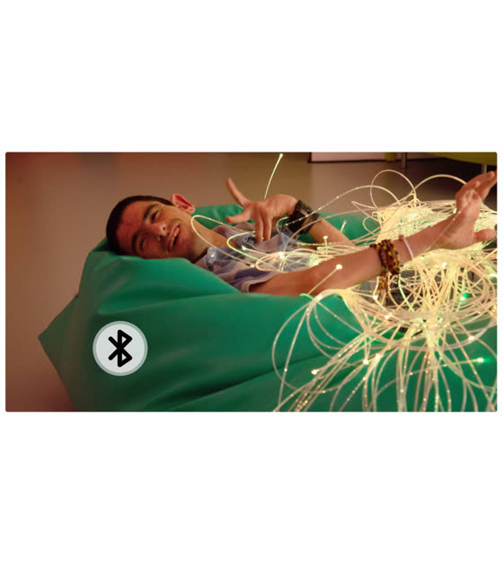 |
Kit vibroacústico Bluetooth | BJ-KVSL | 3 | €496 | €1.488 | |
| Kit Voz SHX | BJ-EXKV | 5 | €164 | €820 | ||
| Linea led de 5m Luminea | BJ-LLLT | 10 | €373,6 | €3.736 | ||
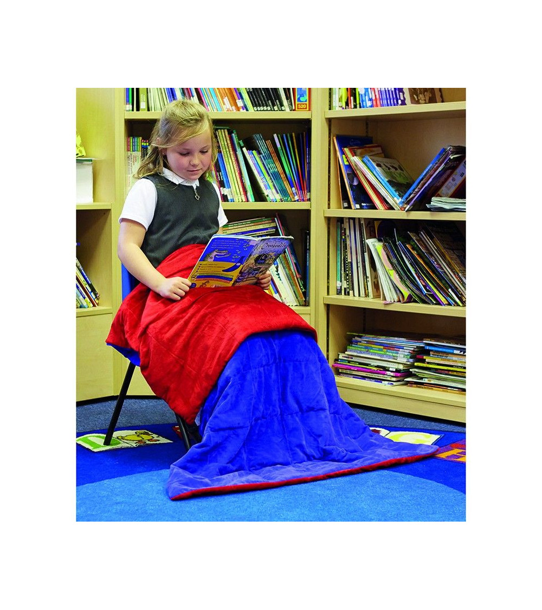 |
Manta de peso azul y roja - mediana - 2,2kg | BJ-SD12319 | 1 | €84 | €84 | |
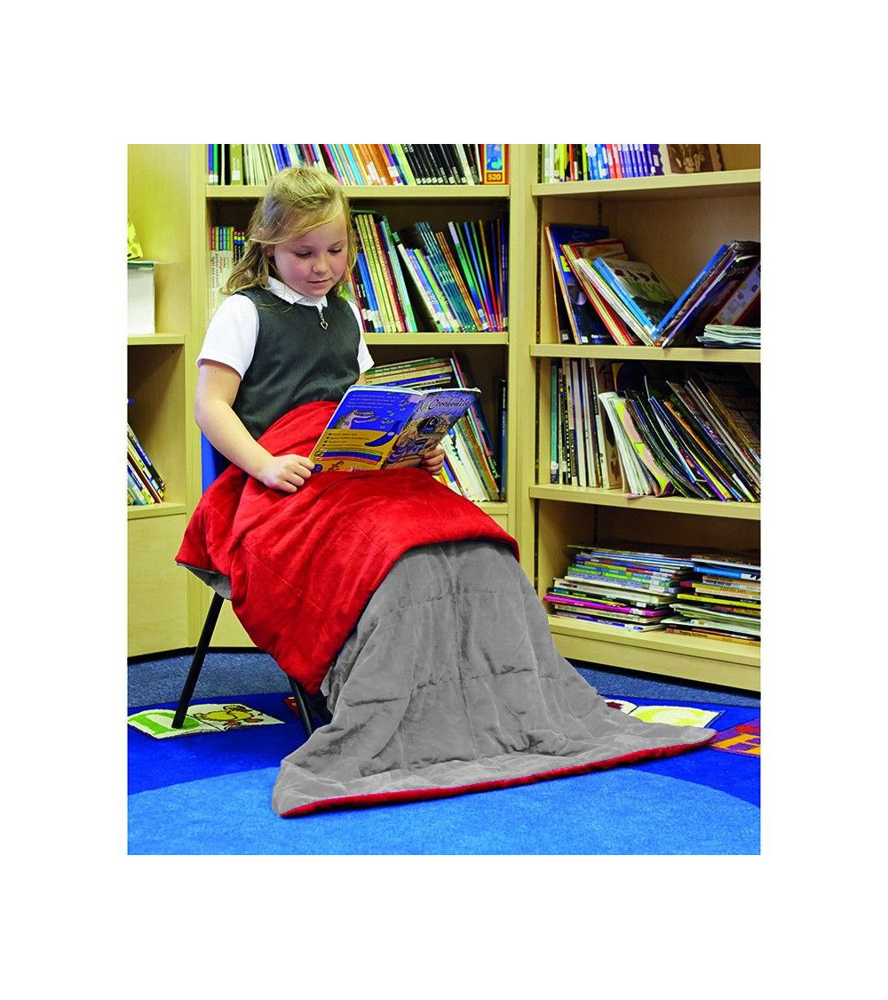 |
Manta de peso gris y roja - grande - 3,6kg | BJ-SD12320 | 1 | €127,2 | €127,2 | |
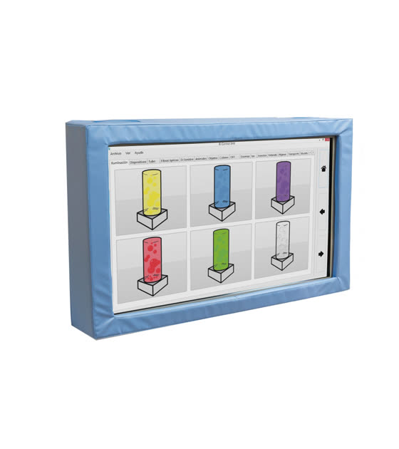 |
Panel táctil SHX | BJ-EX26 | 1 | €2.310,4 | €2.310,4 | |
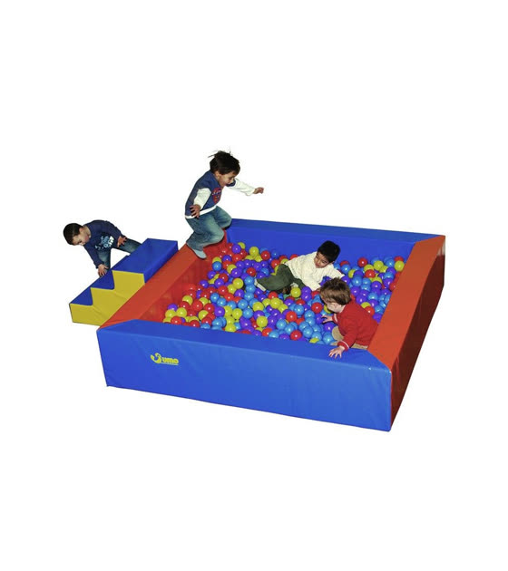 |
Piscina de bolas alta | BJ-EMPB70 | 1 | €888 | €888 | |
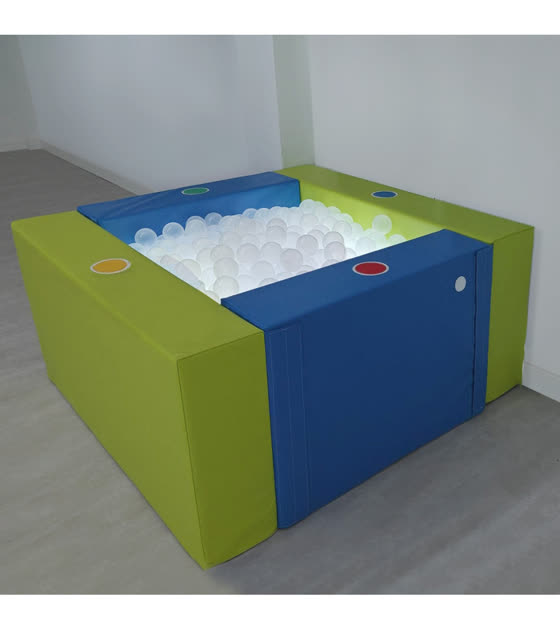 |
Piscina Luminea vibroacústica | BJ-LPIS-V | 6 | €2.012 | €12.072 | |
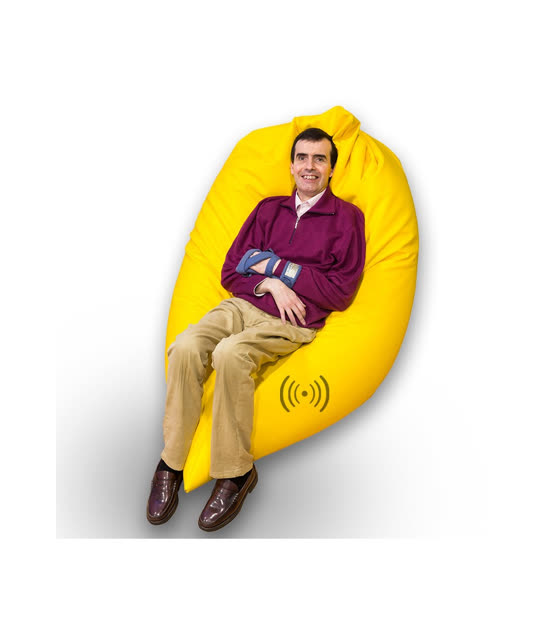 |
Puff transformable vibroacústico | BJ-EMPT-V | 9 | €619,2 | €5.572,8 | |
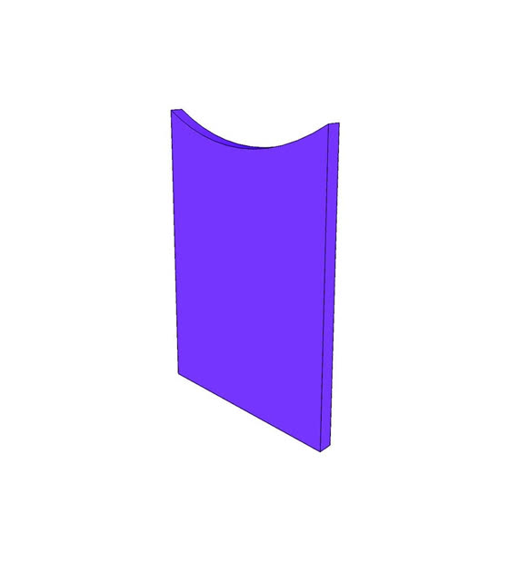 |
Respaldo foam cóncavo | BJ-EMRV | 2 | €126,4 | €252,8 | |
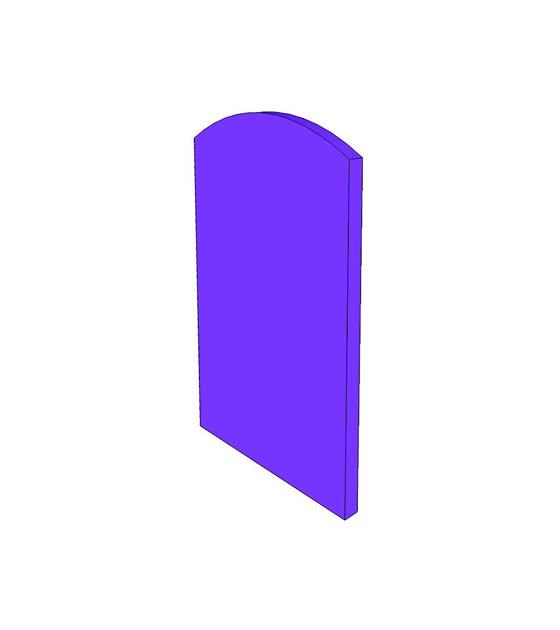 |
Respaldo foam convexo | BJ-EMRX | 1 | €130,4 | €130,4 | |
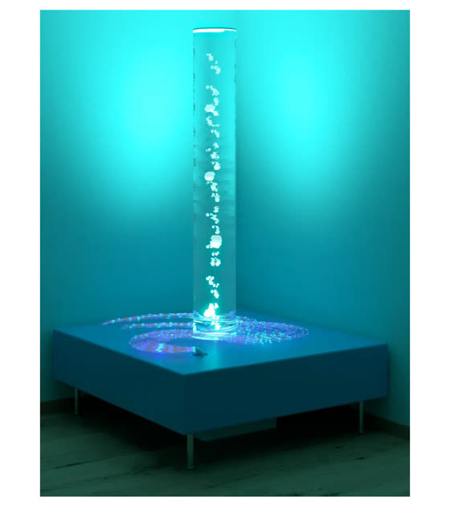 |
Rincon Luminea con tablet2 líneas de la OC combinadas | BJ-LRIN23 | 8 | €2.084 | €16.672 | |
| Sensory Cube grande | BJ-EMSC | 4 | €369,6 | €1.478,4 | ||
| Sensory Feet 1.1 | BJ-SF11 | 1 | €220 | €220 | ||
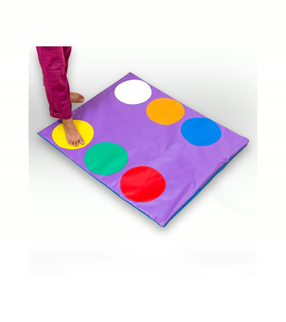 |
Sensory Step | BJ-EMSST | 1 | €235,2 | €235,2 | |
| SHX Compact | BJ-EX04 | 6 | €3.570,4 | €21.422,4 | ||
| SHX Proximity | BJ-EXPRX | 7 | €512,8 | €3.589,6 | ||
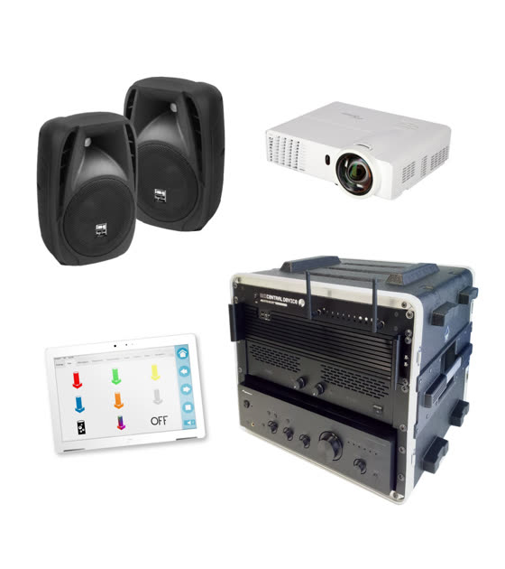 |
SHX Rack | BJ-EX02 | 1 | €4.998,4 | €4.998,4 | |
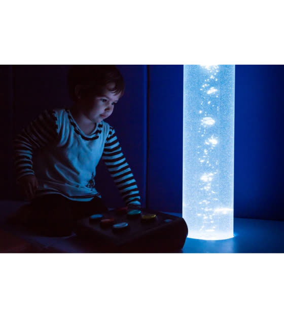 |
Tubo de burbujas pequeño | BJ-LTUB | 1 | €1.004 | €1.004 | Supuesto: asignado al único tubo que tenemos en catálogo, confirmar |
| Ventilador SHX | BJ-EX41 | 5 | €210,4 | €1.052 |
Stock — Combinado
Bodega + contenedor sumados, para ver todos los números juntos — pero con las columnas separadas para saber dónde está cada cantidad.
| Producto | SKU | En bodega | En camino | Total | |
|---|---|---|---|---|---|
Sin foto |
24 tarjetas y 24 pegatinas adicionales Proximity | BJ-EXPRX24 | — | 3 | 3 |
| Amplificador vibroacústico adicional | BJ-EMAVIBX | 1 | 6 | 7 | |
Sin foto |
Armario para SHX Compact/ kit vibro bluetooth | BJ-EX4-C | — | 6 | 6 |
Sin foto |
Balancín 120x30x60 | BJ-EV073B | 1 | — | 1 |
| Balancín vibroacústico | BJ-EMBT-V | 1 | — | 1 | |
| Barra LED UV SHX | BJ-EIBLUVX | — | 1 | 1 | |
Sin foto |
Base cuadrada para rincón Luminea | MP-LEMBCTF | 1 | — | 1 |
| Bolsa material Ultravioleta | BJ-KUV | — | 5 | 5 | |
| Butaca relax vibroacústica | BJ-BUTV | 1 | 3 | 4 | |
| Button 1 | BJ-LCTRL1 | 3 | 2 | 5 | |
| Button 6 | BJ-LCTRL | — | 7 | 7 | |
| Cama de agua vibroacústica | BJ-EMCA-V | — | 1 | 1 | |
| Cielo Luminea circular | BJ-LCCFIB | — | 1 | 1 | |
| Cojín vibroacústico | BJ-EMCV | — | 5 | 5 | |
Sin foto |
Columpio Plataforma de Balanceo Advantage | BJ-EV120040 | 2 | — | 2 |
| Columpio Rulo 2 en 1 | BJ-EV120050 | 1 | — | 1 | |
| Columpio Saco Cocoon | BJ-EV0132 | 1 | — | 1 | |
| Cortina Luminea | BJ-LCFIB | 2 | — | 2 | |
| Difusor de aromaterapia | BJ-EDA | 1 | 2 | 3 | |
| Ducha Luminea | BJ-LDFIB | — | 2 | 2 | |
| Enabler Socket + | BJ-234 | 12 | — | 12 | |
| escalera grande | BJ-EPS061-C | — | 1 | 1 | |
| Espejo grande curvo | BJ-EEGC | — | 2 | 2 | |
| Espejo grande recto | BJ-EEGR | — | 13 | 13 | |
Sin foto |
Estante para pompas SHX | MP-EX46-2 | 1 | — | 1 |
| Estrellas SHX | BJ-EX47 | 3 | 4 | 7 | |
Sin foto |
Fibra óptica Luminea 3 mt | BJ-LFIB3 | 1 | — | 1 |
| Foco de luz UV LED | BJ-EIFUVL | — | 4 | 4 | |
| Kit de bola de espejo | BJ-EKBE300 | 1 | — | 1 | |
| Kit de iniciación de aromaterapia | BJ-EKIA | 2 | 5 | 7 | |
| Kit de masaje | BJ-KMAS | 1 | — | 1 | |
| Kit vibroacústico Bluetooth | BJ-KVSL | — | 3 | 3 | |
| Kit Voz SHX | BJ-EXKV | 1 | 5 | 6 | |
| Línea LED 5mts con perfil de instalación | BJ-LLL | 2 | — | 2 | |
| Linea led de 5m Luminea | BJ-LLLT | — | 10 | 10 | |
| Maní terapéutico | BJ-43700100 | 1 | — | 1 | |
| Manta de peso azul y roja - mediana - 2,2kg | BJ-SD12319 | — | 1 | 1 | |
| Manta de peso gris y roja - grande - 3,6kg | BJ-SD12320 | — | 1 | 1 | |
| Máquina de burbujas | MP-EX46-1 | 1 | — | 1 | |
| Panel táctil SHX | BJ-EX26 | — | 1 | 1 | |
|
Pelota terapéutica 45 cm diámetro | BJ-51090000 | 1 | — | 1 |
| Pelota terapéutica 55 cm diámetro | BJ-51091000 | 1 | — | 1 | |
| Peonza Gigante | BJ-EVPG | 1 | — | 1 | |
| Piscina de bolas alta | BJ-EMPB70 | — | 1 | 1 | |
|
Piscina de pelota Luminea | BJ-LPIS | 1 | — | 1 |
| Piscina Luminea vibroacústica | BJ-LPIS-V | — | 6 | 6 | |
Sin foto |
Preamplificador con filtro | BJ-EMAVIB-1 | 1 | — | 1 |
| Puff transformable vibroacústico | BJ-EMPT-V | — | 9 | 9 | |
| Respaldo foam cóncavo | BJ-EMRV | — | 2 | 2 | |
| Respaldo foam convexo | BJ-EMRX | — | 1 | 1 | |
| Rincon Luminea con tablet | BJ-LRIN23 | — | 8 | 8 | |
| Rodillo de presión | BJ-EV150030 | 1 | — | 1 | |
| Saco de danza M | BJ-EV2208 | 2 | — | 2 | |
| Sensory Cube grande | BJ-EMSC | 1 | 4 | 5 | |
| Sensory Feet 1.1 | BJ-SF11 | 1 | 1 | 2 | |
| Sensory Go SHX | BJ-SGSX | 1 | — | 1 | |
| Sensory Step | BJ-EMSST | — | 1 | 1 | |
| Set de disco táctiles | BJ-E16807 | 1 | — | 1 | |
| SHX Compact | BJ-EX04 | 1 | 6 | 7 | |
| SHX Proximity | BJ-EXPRX | 1 | 7 | 8 | |
| SHX Rack | BJ-EX02 | — | 1 | 1 | |
| Tubo de burbujas pequeño | BJ-LTUB | — | 1 | 1 | |
| Ventilador SHX | BJ-EX41 | — | 5 | 5 |
Stock — Comparar cotizaciones
Elige hasta 10 cotizaciones de Sala Multisensorial (-SM) para ver sus productos cruzados contra el stock — cada una por separado y también sumadas entre sí. Se traen en vivo desde el CRM.
Cargando cotizaciones…